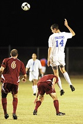
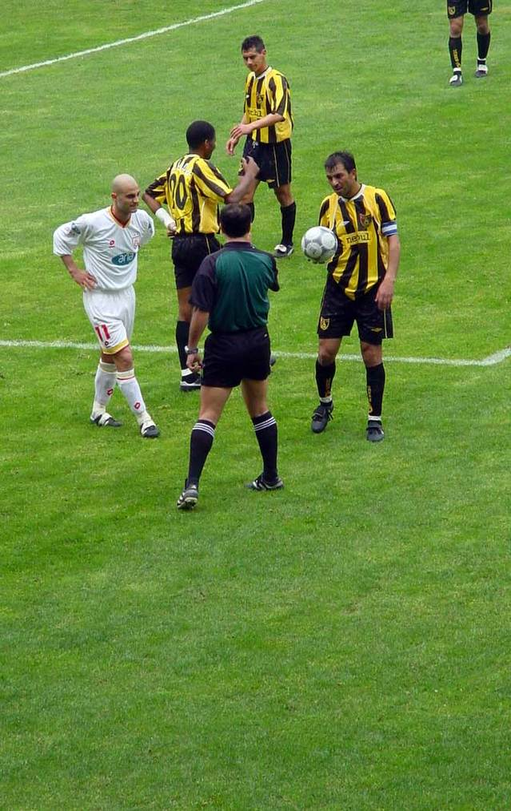

Alexis cabeceó hacia atrás para que el central uruguayo ponga
el 2-1 sobre Torino.
2h

2h

3h
Liga Santander
1h
2h
Alexis cabeceó hacia atrás para que el central uruguayo ponga
el 2-1 sobre Torino.
2h
2h
3h
CONMEBOL
1h
2h
Alexis cabeceó hacia atrás para que el central uruguayo ponga
el 2-1 sobre Torino.
2h
2h
3h
NBA
1h
2h
Alexis cabeceó hacia atrás para que el central uruguayo ponga
el 2-1 sobre Torino.
2h
2h
3h
Titulares
Agenda: lo mejor de la programación de ESPN
El City jugará UCL ya que el TAS levantó sanción
Klopp reveló que dejará Liverpool en 2024
Bartomeu reveló que se paró el pase de Lautaro
Pellegrini: "Vengo a pelear cosas importantes"
El Leeds de Bielsa quedó a un paso del ascenso
Con doblete de Icardi, PSG goleó 9-0 a Le Havre
Contundente victoria de Hamilton en Estiria
#SeparadosPeroJuntos
Alina te enseña a hacer un tapabocas
#SeparadosPeroJuntos
Alina te enseña a hacer un tapabocas
#SeparadosPeroJuntos
Alina te enseña a hacer un tapabocas
#SeparadosPeroJuntos
ESPN Play
ESPN Play se integra a ESPN App para ofrecerte lo mejor del deporte,
en un solo lugar
La propuesta online que reúne más de 6,500 eventos en vivo por año y un
amplio archivo de contenidos on demand con lo mejor de la programación de ESPN,
transmisiones exclusivas y la posibilidad de elegir entre múltiples partidos simultáneos
en vivo, ya está disponible en la nueva versión de ESPN App.
Videos Virales
De pie, señores: taco de Messi y golazo de Griezmann
La Pulga le dejó la pelota con un lujo al francés, que la picó
por encima de Asenjo para coronar un verdadero golazo del Barcelona ante
Villarreal y sellar el 3 a 1 en el marcador.
¡Desastre total de Ferrari!
Charles Leclerc se tiró a pasar por adentro a su compañero
Sebastian Vettel y ¡se chocaron! El auto del alemán se quedó sin alerón trasero
y debió abandonar. El monegasco sigue, tras pasar por boxes.
¡Golazo de Neymar!
El brasileño recibió el pase de Di María y sacó a bailar a toda
la defensa de Le Havre para que ya sea goleada.